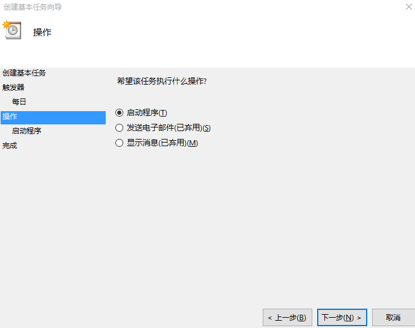
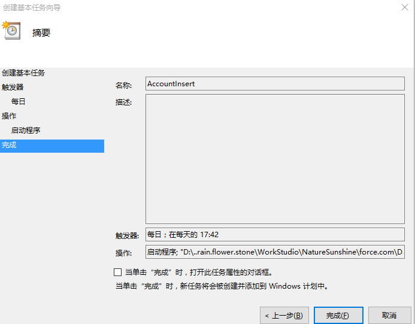
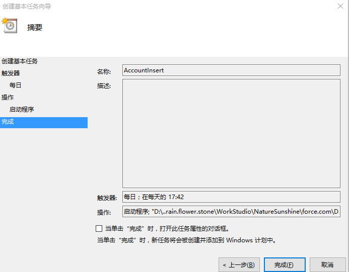

DataLoader Command-Line Interface
Data Loader 是一个批量数据导入导出的客户端应用，使用它可以对SF数据记录进行插入、更新、删除和导出.
数据操作
- 当进行数据导入时，DataLoader从文件或者数据库中 读取并加载数据
- 当进行数据导出时，DataLoader输出 CSV文件 或者导入到 数据库 中
使用方式
用户接口GUI- 命令行(Windows only)
数据源
- 数据文件（CSV文件）
- 数据库（Command only）
- 命令行接口
-
简述
当使用
命令行时，你需要配置数据源和数据映射关系以及操作，以便设置数据并加载程序进行自动处理。
该配置可以通过DataLoader GUI来进行设置。 -
1.安装目录文件结构
fore.com
└─Data Loader [主目录]
├─bin [batch命令文件]
│ ├─▬▬▬encrypt.bat
│ └─▬▬▬process.bat
├─▬▬▬dataloader-33.0.0-uber.jar
├─Java [java工作目录]
│ ├─bin
│ │ ├─▬▬▬...
│ │ ├─▬▬▬java.exe
│ │ └─▬▬▬...
│ ├─Data
│ ├─lib
│ │ ├─▬▬▬...
│ │ ├─▬▬▬rt.jar
│ │ └─▬▬▬...
│ └─Other
├─licenses
└─samples [配置样本目录]
├─conf [配置文件目录]
│ ├─▬▬▬database-conf.xml
│ ├─▬▬▬process-conf.xml
│ └─▬▬▬opportunityInsertMap.sdl
├─data [数据源目录]
│ └─▬▬▬opportunityData.csv
└─status [日志目录]
└─▬▬▬success0413060133.csv
- 2.设计流程
- 配置DataLoader，创建
process-Xxx.bat批处理文件 - 添加任务
脚本到Windows执行任务计划 - 运行batch并备份数据文件，有异常则发送邮件通知
-
3.用户系统配置
- 复制
sample/conf到主目录Data Loader中 - 创建配置文件
config.properties并进行编辑如下
- 复制
sfdc.endpoint=https://test.salesforce.com
sfdc.username=boxadmin@natr.com.box
sfdc.password=aae9e2c86792c848fd3107685cabd3d6
sfdc.password获取方法为进入bin目录中执行以下命令
bin> encrypt -e password
- 4.批操作核心配置
-
- 打开
process-conf.xml文件编辑配置
- 打开
<bean id="SObjectOperation"
class="com.salesforce.dataloader.process.ProcessRunner"
singleton="false">
<description>updates or inserts or upsert data into SFDC from csv local file."</description>
<property name="name" value="SObjectInsert"/>
<property name="configOverrideMap">
<map>
<entry key="sfdc.entity" value="SObject"/>
<entry key="process.operation" value="Operation"/>
<entry key="process.mappingFile" value="SObjectOperation.sdl"/>
<entry key="dataAccess.name" value="SObject_Operation.csv"/>
<entry key="process.outputSuccess" value="SObject_Operation_Success.csv"/>
<entry key="process.outputError" value="SObject_Operation_Error.csv"/>
<!-- <entry key="" value=""/> -->
</map>
</property>
</bean>
具体例子
<!DOCTYPE beans PUBLIC "-//SPRING//DTD BEAN//EN" "http://www.springframework.org/dtd/spring-beans.dtd">
<beans>
<!-- batch文件process目标名称[id] -->
<bean id="Bonus_Bal__c_Insert"
class="com.salesforce.dataloader.process.ProcessRunner"
singleton="false">
<description>[请在此处填写关于该操作的描述]."</description>
<property name="name" value="Bonus_Bal__cInsert"/>
<property name="configOverrideMap">
<map>
<!-- 操作实体SObject对象 -->
<entry key="sfdc.entity" value="Bonus_Bal__c"/>
<!-- 操作类型insert,update,upsert -->
<entry key="process.operation" value="insert"/>
<!-- SFDC-CSV字段映射配置 -->
<entry key="process.mappingFile" value="../conf/map/Bonus_Bal__c_Insert.sdl"/>
<!-- 数据源文件 -->
<entry key="dataAccess.name" value="../data/Bonus_Bal__c_Insert.csv"/>
<!-- 成功日志文件 -->
<entry key="process.outputSuccess" value="../data/work/Bonus_Bal__c_Insert/Bonus_Bal__c_Insert_Success.csv"/>
<!-- 失败日志文件 -->
<entry key="process.outputError" value="../data/work/Bonus_Bal__c_Insert/Bonus_Bal__c_Insert_Error.csv"/>
<!-- <entry key="" value=""/> -->
</map>
</property>
</bean>
</beans>
process.operation对应的图形界面
-
- 字段列映射配置
复制conf中文件opportunityInsertMap.sdl编辑并进行重命名
- 字段列映射配置
-
数据流向 配置原则 数据流向为CSV到SFDC csv列字段名=SFDC字段API名 数据流向从SFDC到CSV csv列字段名=SFDC字段API名 *该配置中勿要出现中文字符,该配置为增量配置
- 5.邮件发送配置
-
邮件是使用SendEmail程序对其命令行进行操作，详见sendEmail官网
-
- 邮件模板配置
在上述邮件程序目录中的文件mail为邮件模板，使用文本编辑器打开即可修改（注，其中的${}部分请勿修改），注意格式必须符合HTML规范
- 邮件模板配置
-
- 邮件程序配置
邮件调用程序为邮件命令目录下的sendMail.bat文件，使用文本编辑器进行编辑，如下
- 邮件程序配置
邮件效果如下：
sendEmail -o message-charset="utf-8" ^
-o tls=yes ^
-o message-content-type=html ^
-o message-header="X-Priority: 1" ^
-f "DataLoader<your_mail_account@163.com>" ^
-t jony.fang@celnet.com.cn ^
-s smtp.163.com ^
-o username=your_mail_account@163.com ^
-o password=mailPassword ^
-u "DataLoader数据导入异常" ^
-o message-file=%1 ^
-a %2 %3 %4
-
其中，主要配置参数为
-f "DataLoader<发送方邮箱地址>"此处填入发送方邮箱地址-t [接收方邮箱地址]此处填写接收方邮箱地址-s [发送方邮箱服务器地址]此处填入发送方邮箱服务器地址 (如163邮箱服务器地址为smtp.163.com)-o username=[发送方邮箱地址]-o password=[发送方邮箱密码]- 上面两处为发送方邮箱用户名和密码
-
*如果需要发送多个用户，请进入sendEmail官网查看用法
*在任务批处理文件中，调用该sendMail程序用法如下
sendMail.bat mail Insert.csv Error.csv log.txt
其中该命名的四个参数依次为发送的邮件文件、数据源，错误日志文件和控制台日志文件
-
6.批处理文件配置
批处理文件对应每个SObject每一种操作，如Account的insert（导入）对应着一个bat文件，在
Windows的 任务计划中对应一个任务 -
- 创建一个batch文件，编写程序如下：
@echo off
REM 配置该任务的工作目录，如果不存在则创建
set WORK_DIR=..\data\work\Bonus_Bal__c_Insert
if exist %WORK_DIR% (
echo "Directory is exist"
) else (
echo "make the directory"
md %WORK_DIR%
)
REM set process name
set PROCESS_OPTION=process.name=Bonus_Bal__c_Insert
REM 执行数据操作
..\Java\bin\java.exe -cp ..\dataloader-uber.jar -Dsalesforce.config.dir=../conf com.salesforce.dataloader.process.ProcessRunner %PROCESS_OPTION% > %WORK_DIR%/log.txt
REM 设置备份文件夹名称
set bakDir=%date:~0,4%%date:~5,2%%date:~8,2%%time:~0,2%%time:~3,2%%time:~6,2%
::pause
REM 创建备份文件夹
mkdir ..\backup\%bakDir%-Bonus_Bal__c_Insert
REM 复制源数据文件和日志文件到备份文件夹下
@copy ..\data\Bonus_Bal__c_Insert.csv ..\backup\%bakDir%-Bonus_Bal__c_Insert
@copy ..\data\work\Bonus_Bal__c_Insert ..\backup\%bakDir%-Bonus_Bal__c_Insert
REM 分析错误1 by log file
findstr /C:"doneSuccess" ..\backup\%bakDir%-Bonus_Bal__c_Insert\log.txt
set isSuccess = %errorlevel%
findstr /C:"The operation has fully completed." ..\backup\%bakDir%-Bonus_Bal__c_Insert\log.txt
set isSuccess2 = %errorlevel%
if isSuccess EQU 0 if isSuccess2 EQU 0(::sucess then get get related info
echo "处理完成……"
goto csvAnalysis
) else (
goto sendMail
)
:csvAnalysis
REM find isError by csv log file
for /f %%a in (' find /c /v "" ^<..\data\work\Bonus_Bal__c_Insert\Bonus_Bal__c_Insert_Error.csv ') do (set n=%%a )
IF %n% GTR 1 (goto sendMail) ELSE goto end
REM 发送异常邮件通知
:sendMail
REM 复制邮件模板
@copy ..\mail\mail ..\backup\%bakDir%-Bonus_Bal__c_Insert
REM 生成邮件
"..\Java\bin\java" -classpath ..\bin EmailGen ^
..\backup\%bakDir%-Bonus_Bal__c_Insert\mail ^
..\backup\%bakDir%-Bonus_Bal__c_Insert\mail2 ^
用户 "Insert" Bonus_Bal__c ^
%bakDir:~0,4%年%bakDir:~4,2%月%bakDir:~6,2%号^ %bakDir:~8,2%时%bakDir:~10,2%分%bakDir:~12,2%秒 ^
Bonus_Bal__c_Insert.csv ^
Bonus_Bal__c_Insert_Error.csv ^
log.txt ^
%bakDir%-Bonus_Bal__c_Insert
REM delete
del ..\backup\%bakDir%-Bonus_Bal__c_Insert\mail
ren ..\backup\%bakDir%-Bonus_Bal__c_Insert\mail2 mail
REM 发送邮件通知
cd ..
bin\sendMail.bat ^
backup/%bakDir%-Bonus_Bal__c_Insert/mail ^
backup/%bakDir%-Bonus_Bal__c_Insert/Bonus_Bal__c_Insert.csv ^
backup/%bakDir%-Bonus_Bal__c_Insert/Bonus_Bal__c_Insert_Error.csv ^
backup/%bakDir%-Bonus_Bal__c_Insert/log.txt
exit
:end
echo data process done
exit
- 7.添加batch到任务
- 在
Windows中的任务计划程序中设定执行脚本（processXXX.bat）和执行频率
打开计划任务程序 如图所示，进行一步步操作  

salesforce_data_loader.pdf
Salesforce Data Loader - SalesforceTutorial
Powered by celnet